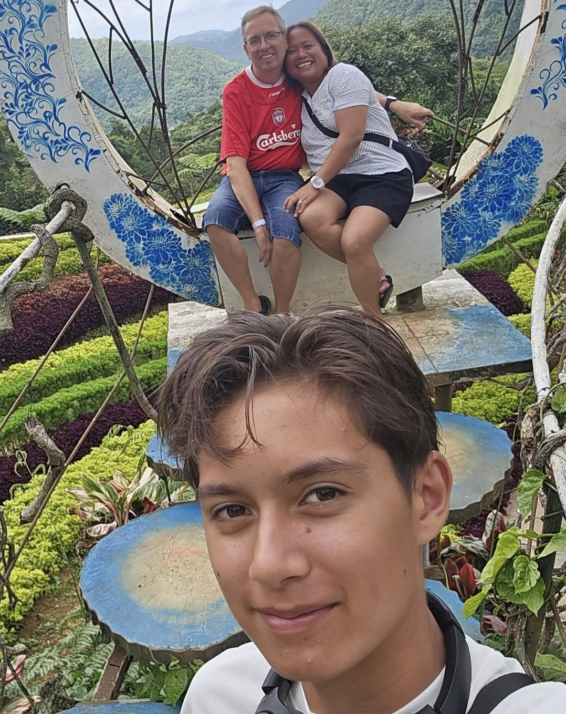

Familie
Jeg er gift med Maricel og far til Steven, som efterhånden er blevet 16 år og temmelig meget sin egen.
Hverdagen hos os er en blanding af skole, arbejde, aftensmadssnakke, fodbold i fjernsynet, musik i højttalerne og de små pauser, hvor vi bare lige lander sammen. Når det er ferie holder vi af at rejse og se nye steder.
Familien fylder meget – både i mit privatliv og i måden, jeg ser verden på. Mange af de historier, jeg fortæller, handler i bund og grund om relationer, ansvar og fællesskaber. Det starter tit derhjemme.